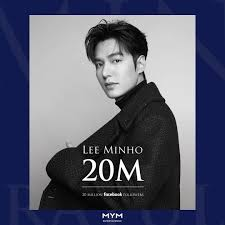

Lee Min Ho
.jpg)
Datos Personales
- Nombre: 이민호 / Lee Min Ho
- Nombre japones: イ・ミンホ / I minho
- Nombre chino: 李敏鎬 / Li Min Hao
- Profesión: Actor, Modelo, Cantante
- Fecha de nacimiento: 22-Junio-1987 (33 Años)
- Lugar de nacimiento: Seúl, Corea del sur
- Estatura: 187 cm
- Peso: 68 kg
- Tipo de sangre: A
- Signo zodíacal: Cancer
- Signo zodiacal chino: Conejo
- Agencia:MYM Entertainment (Corea del Sur), IMX Inc (Japón), "HY" Huayi Brothers (China)
Lee tiene una hermana mayor, Lee Yong-jung, quien es la CEO de su agencia actual MYM Entertainment.
Es buen amigo de la cantante Kang Min-kyung (del grupo Davichi).
En agosto de 2011 comenzó a salir con la actriz Park Min-young, sin embargo la relación terminó a principios de 2012, debido a sus apretadas agendas.
En marzo de 2015 comenzó a salir con la cantante y actriz Suzy, sin embargo dos años después, en noviembre del 2017, las compañías de los artistas confirmaron que habían terminado su relación.
Biografía
Lee Min-ho (Hangul: 이민호) es un actor surcoreano. Ganó fama ampliamente en Corea y partes de Asia con su papel de Gu Jun-pyo en Boys Over Flowers en 2009. El personaje le valió un premio como Mejor Actor Nuevo en los 45.os Premios Baeksang Arts.
Es conocido por sus papeles principales en City Hunter (2011), que le hizo popular en Europa, The Heirs (2013), Legend of the Blue Sea (2016) y The King: Eternal Monarch (2020) qué le estableció como el actor coreano más famoso en el continente africano.
El éxito de las series globalmente en que actuó han hecho de él una estrella clave de la Hallyu y una celebridad global. Protagonizó su primer papel principal en la película Gangnam Blues (2015), seguido de su primera película producida en China Bounty Hunters (2016).
Primeros años y educación
Lee nació en Heukseok-dong, Dongjak-gu, Seúl. Cuando era niño, esperaba convertirse en jugador de fútbol profesional. Fue seleccionado para la clase de fútbol juvenil del mánager surcoreano y exjugador profesional Cha Bum-Kun , pero una lesión en el quinto grado de la escuela primaria puso fin a esta aspiración. En su segundo año de escuela secundaria, comenzó a actuar.Se especializó en Cine y Arte en la Universidad Konkuk.
Carrera
2006-2008 Comienzo
Comenzó a audicionar y obtuvo papeles menores en varias series de televisión como Nonstop 5 y Recipe of Love. Su primer papel oficial fue en una serie de EBS, Secret Campus (2006). Al inicio de su carrera, utilizó el nombre artístico Lee Min porque su agencia pensaba que su nombre de nacimiento era demasiado común. Sin embargo, como su nombre artístico era pronunciado y escrito ( Hangul ) de la misma manera que la palabra coreana imin, que significa "inmigración", se dijo que era difícil encontrarlo en los resultados de búsqueda en Internet. Finalmente volvió a usar su nombre real.
En 2006, su carrera como actor quedó en suspenso durante un año después de un grave accidente automovilístico, mientras conducía con su compañero actor Jung Il-woo. Lee resultó gravemente herido y pasó varios meses postrado en cama. Al recuperarse, recibió su primer papel principal en el drama escolar Mackerel Run en 2007, pero la serie se redujo a solo ocho episodios debido a la baja audiencia. En 2008 apareció en varios papeles de televisión (Get Up y I Am Sam ) y dos películas, Public Enemy Returns y Our School's ET. Durante el rodaje de este último, se hizo amigo del actor Kim Su-ro, quien más tarde lo elogió en un programa de variedades: "Reconozco una estrella cuando la veo. Cuando estaba haciendo Our School's ET, sabía que Lee Min-ho se convertiría en uno de los mejores actores del país "
2009-2012 Popularidad
La popularidad llegó en 2009 con el papel principal de Gu Jun-pyo en Boys Over Flowers de KBS, adaptación coreana del popular manga Shōjo del mismo nombre. La competencia por el papel principal fue intensa y Lee llegó a saber que fue escogido por medio de los periódicos. La serie atrajo altos índices de audiencia y entusiasmo en toda Corea del Sur durante la transmisión. La nueva popularidad le ganó muchos acuerdos de patrocinio y creó otra Ola Coreana en toda Asia convirtiéndolo en una estrella Hallyu.
En 2010, protagonizó la comedia romántica Personal Taste, en la que interpretó a un joven arquitecto perfeccionista y ambicioso que se hace pasar por un hombre gay para convertirse en compañero de habitación con una mujer joven, lo que lleva a complicaciones románticas. Cuando se le preguntó por qué eligió el papel durante una entrevista, respondió: "Creo que haría un mejor trabajo desempeñando roles más pesados y más definidos cuando sea mayor. Creo que el "Personal Taste" fue perfecto porque es brillante, alegre, pero también puedes reír y llorar por eso ".
En 2011, interpretó al personaje principal en el drama de acción City Hunter, que se basó en el manga de Tsukasa Hojo. El drama fue un éxito comercial en Asia, y contribuyó a su creciente popularidad, especialmente en Japón, Filipinas, China, y partes de Europa.
Participó el un popular programa chino de variedades Happy Camp en diciembre de 2011.
En 2012, protagonizó el drama médico-histórico, Faith con Kim Hee-sun. Aunque el drama obtuvo clasificaciones de audiencia de +10%, fue un fracaso comercial debido a su alto presupuesto.
2013-2016 Fama intercontinental
En abril de 2013, su figura de cera fue presentada en el Madame Tussauds de Shanghái.Luego lanzó su primer álbum "My Everything" en mayo de 2013 y realizó una gira de reunión de fanes en Asia.
También anunció su regreso a la televisión con un nuevo drama titulado The Heirs , un drama para adolescentes escrito por Kim Eun-sook. Sobre por qué decidió asumir el papel de un heredero chaebol en la escuela secundaria cuatro años después de interpretar uno en Boys Over Flowers, respondió: "Antes de que tuviera más de 20 años, quería interpretar un personaje más optimista, uno que me permitiera volver a ese sentimiento de inocencia simple y sin complicaciones que tenía cuando era más joven ". Estrenada el 9 de octubre de 2013, The Heirs disfrutó de una inmensa popularidad tanto a nivel local, con una calificación máxima de 28.6%, como a nivel internacional, con más de mil millones de visitas en el sitio web de transmisión china iQiyi . Lee experimentó un aumento en su popularidad, particularmente en China.
El 30 de enero de 2014, se convirtió en la primera celebridad coreana en presentarse en la gala de Año Nuevo Lunar CCTV de China. Cantó una canción con Harlem Yu, el cantante original del tema musical de Meteor Garden, la versión china de Boys Over Flowers. También fue invitado a la tercera conferencia del Comité Presidencial de Corea para el Enriquecimiento Cultural como representante de la industria del entretenimiento, para compartir y contribuir a la discusión de temas relacionados con el desarrollo del contenido cultural de Corea. Recibió el "Premio del Primer Ministro" en el 5º Premio de Cultura y Artes Populares de Corea por su contribución a Hallyu.
Posteriormente grabó y lanzó su segundo EP Song for You en octubre de 2014 bajo Universal Music. Al igual que con su álbum anterior, afirmó que las canciones fueron grabadas para sus fanes y que no tenía ambición de seguir una carrera como cantante. El lanzamiento del álbum coincidió con el inicio de su gira RE: MINHO fan meeting que abarcó varias ciudades asiáticas.
Luego asumió un papel protagónico en la película de acción noir de Yoo Ha, Gangnam Blues (2015), ambientada en la década de 1970, cuando el auge del desarrollo inmobiliario se extendió por Gangnam. La película, protagonizada por Kim Rae-won, marca el primer papel principal de Lee en un largometraje.
En 2016, protagonizó la comedia de acción Bounty Hunters, dirigida por Shin Terra. La película superó los gráficos de taquilla en su fecha de lanzamiento y alcanzó los US $ 29 millones en China. Más adelante ese año, regresó a la pantalla pequeña en el drama de fantasía y romance La leyenda del mar azul junto a la actriz Jun Ji-hyun, que resultó un éxito.
2017-2019 Alistamiento militar
Comenzó su servicio militar obligatorio el 12 de mayo de 2017 en el Centro de Bienestar Social Suseo en la Oficina del Distrito de Gangnam como oficial de servicio público. Lee no puede servir como un soldado en servicio activo debido a un accidente automovilístico ocurrido en agosto de 2006 con su compañero actor Jung Il-woo, lo que causó que permaneciera en cama durante meses, ya que había sufrido graves lesiones en las piernas. Sufrió otro accidente automovilístico en 2011 mientras filmaba City Hunter.

El 15 de marzo de 2018, ingresó a su entrenamiento militar en el Centro de Entrenamiento del Ejército de Corea en Nonsan, provincia de Chungcheong del Sur. Regresó a su servicio público después de cuatro semanas de entrenamiento militar básico.
Periodo de servicio militar: 12 de Mayo de 2017 al 25 de Abril de 2019
2020 Actualidad
El 17 de abril de 2020 se unió al elenco principal de la serie The King: The Eternal Monarch donde interpretó a Lee Gon, el Emperador del Imperio Coreano que trata de luchar contra el mal, hasta el final de la serie el 12 de junio del mismo año.
En octubre del mismo año se confirmó que se había unido al elenco de Pachinko. El drama está basada en el libro de Lee Min-jin del mismo título y cuenta la historia de los coreanos que viven en Japón y enfrentan los estereotipos y el racismo en el país.
.jpg)
Roles de embajador
- Embajador honorario de la campaña Love Net de UNICEF para combatir la malaria (2009-2010)
- Embajador de Relaciones Públicas para la Universidad de Konkuk (2010)
- Fiscal honorario o básicamente un embajador de relaciones públicas para el fiscal de Corea (2012)
- Embajador de relaciones públicas para la campaña chilena "Reforestemos Patagonia" organizada por Minoz Chile (2013)
- Embajador público de 'Campaña de turismo coreano', también llamado como 'La cara del turismo coreano' (28 de julio de 2015)
- Embajador honorario para los '2018 Juegos Olímpicos de Invierno de Pyeongchang' (25 de septiembre de 2015)
- Embajador de Relaciones Públicas para la Visita a Corea Año 2016–2018 (7 de noviembre de 2015)

Contribuciones Sociales
En 2014, creó el sitio web PROMIZ, una plataforma de recaudación de fondos para crear conciencia y alentar la donación para causas sociales y humanitarias. Las ganancias de la venta de la mercancía de PROMIZ se entregan a los socios seleccionados para ejecutar los proyectos de caridad. Desde entonces, el sitio ha recaudado US $ 50,000 de él y sus seguidores para ayudar a crear pozos en Malawi a través de la organización sin fines de lucro Charity: Water. También ha recaudado fondos y ha contribuido con donaciones a varias causas; como el Día Mundial del Agua, el "Proyecto Paraguas Transparente" y la campaña "Haciendo un invierno cálido tanto para los cuerpos como para los corazones". En 2016, PROMIZ ganó los premios Korea Good Brand Awards.
En 2015, donó W100 millones a UNICEF para ayudar a las víctimas de un terremoto devastador en Nepal. En 2016, fue galardonado por el Ministerio de Salud y Bienestar Social por su contribución a la sociedad.
Para conmemorar el décimo aniversario desde su debut, sus fanáticos participaron en varias causas benéficas. Los fanáticos chinos plantaron 510 árboles en Mongolia Interior, mientras que sus fanáticos mexicanos donaron a los niños afectados por el cáncer con las ganancias obtenidas de la venta de tapas de botellas de plástico a empresas de reciclaje. Los fanáticos de Taiwán y Hong Kong también hicieron donaciones a las organizaciones con fines de lucro World Vision y UNICEF. Los años anteriores, su club de fanes de Chile realizó donaciones a la organización humanitaria Patagonia Compassion; y también participaron en varias otras causas benéficas.
Influencia en los medios
A partir de junio de 2018, Lee tiene 3 millones de seguidores en Twitter, 29 millones y 17,4 millones de seguidores en Weibo y Facebook respectivamente. En 2014 y 2015, encabezó una encuesta en línea organizada por una revista de entretenimiento china para ser coronado como el "Dios masculino asiático". En 2017, fue elegido como el actor coreano más favorecido por los fanáticos de la Ola coreana en los Estados Unidos